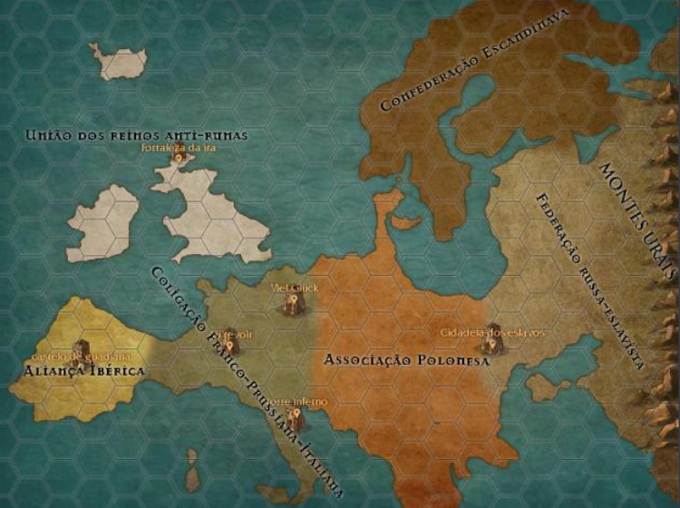

História
Há muito tempo atrás, precisamente falando, dois mil anos antes do colapso de Veneza, a sociedade humana se encontrava em uma consolidada e absoluta paz, regidos pelas leis da sociedade feudal e da ordem, nesse tempo, lugares como a América e a Oceania já haviam sido recentemente descobertas e em processo de colonização...
Entretanto, nesse tempo de paz absoluta e incontestável, um arqueólogo denominado Adam L. Runet acabará de descobrir estranhas tatuagens na natureza, trazendo-as para um estudo mais detalhado na Europa, entretanto, subitamente foram sendo encontradas mais e mais tatuagens espalhadas pelo planeta, após longos 500 anos de pesquisa lenta e sem investimentos, foi descoberto uma propriedade oculta dessas tatuagens, através de certos experimento e ritos, as tatuagens eram capaz de conceder efeitos variados e sobre-humanos em seus portadores, tais como aumento de capacidades humanas, controles e criação de elementos, etc...
Não demorou muito e a notícia estava na boca de todos, vendo a vantagem científica e militar diante dessa descoberta, os governos decidiram investir freneticamente nessas pesquisas, esse período ficou conhecido como a Febre rúnica (1500 - 1.000. As tatuagens posteriormente foram chamadas de runas em homenagem ao arqueólogo ), que foi marcada por diversos experimentos considerados brutais em humanos e animais, não apenas isso, essa época também ficou conhecida pela gigantesca pressão na Europa, onde os países de lá eram muito mais avantajados em conhecimento e pesquisas sobre as runas, com o poderio militar em constante crescimento, os países europeus entraram em uma espécie de guerra fria, onde qualquer pequeno ataque poderia desecandear em uma guerra sem precedentes... Algo que infelizmente se concretizou.
Complicações em Massa
Diversos escandâlos chegaram aos ouvidos da população, haviam rumores de que, jovens eram ''misteriosamente desaparecidos'' para experimentos, a única suposição para esse acontecimento era de que os jovens mostravam mais potencial rúnico que os outros, após o espalhamento desse rumor, a população se revoltou com essa medida, o que dividiu a Europa em dois blocos, os Brancos, governos que eram mais abertos com a população, igualdade, democracia, etc... E que mantinham pesquisas moderadas com as runas e com medidas aceitáveis , entretanto, o outro bloco se chamava Arcanos, eles repudiaram totalmente a forma de governo do outro bloco, sua principal característica era o investimento massivo e em massa das pequisas sobre as runas e a repressão agressiva na população e em quem criticava o governo.
Ambos foram ganhando poder e influência, principalmente os países do bloco Arcano, que ganharam poderio militar imenso, buscando aumentar seus poderes, diversos países que se identificavam em seus governos fizeram fragéis alianças militares, o tempo se passava e os governos não mais fizeram apenas alianças, mas sim se uniram e fundiram seus países, acarretando no sistema geopolítico atual, mas havia um problema para a guerra começar, as runas não eram totalmente eficientes na maior parte do tempo, o que causava diversos problemas no uso, uma das maiores evidências é um outro rumor que se espalhou pelas pessoas, de que a população mundial havia decaido de 300 milhões para 290 milhões de pessoas, uma solução logo surgiu, através de vários experimentos e pesquisa, o bloco dos Arcanos conseguiu finalmente a ferramenta que iria mudar o rumo da guerra, os chamados catalisadores, equipamentos científicamente avançados que sincronizavam o usuário, a runa e o equipamento, tornando a taxa de sincronização e de uso da runa completamente eficiente e devastadora, o cenário já estava pronto, era apenas questão de tempo até que... Em 400 A.C.V, o primeiro-ministro da monarquia parlamentarista da Itália foi assassinado e a culpa caiu para os Arcanos...
Guerra do Fim do Mundo
Após o assassinato do primeiro-ministro, o rei italiano declarou guerra contra o bloco dos Arcanos, seus aliados, os Brancos, se juntaram rapidamente a sua luta, uma guerra de exércitos quase onipotentes é uma breve descrição para tudo que aconteceu, destruição e massacre virou cotidiano da Europa feudal, muitas pessoas achavam que não iria durar muito, já que o conflito trazia prejuízo para ambos os lados, infelizmente este não foi o caso, a guerra perdurou por séculos, essa época foi o pico das correntes filosóficas e ideológicas que pregavam principalmente o conceito da entropia e de que todos estavam fadados ao inevitável fim e trágico, consequência do ''mal'' que eram as runas, outras correntes que pregavam a liberdade e extinção da sociedade rúnica também foram espalhadas, mesmo tendo correntes espalhadas, não foi o suficiente para parar a guerra, mesmo assim, ela terminou, de forma terrível...
COLAPSO DE VENEZA (C.D.V)
Após 400 anos de guerra e devastação, foi chegando cada vez mais perto do fim da guerra, os blocos ambos cansados de toda essa guerra e ficando quase sem recursos, decidiram através de acordos não-escritos de que realizariam a última batalha para acabar com tudo isso em Veneza, o lugar onde o primeiro-ministro havia sido assassinado e onde tudo isso havia começado, exércitos ambos armados com runas, catalisadores e usuários experientes, poderes infinitos se embatiam naquele lugar, e então, a ordem de ''ATACAR!'' veio, após o lançamento de todo o poder que tinham de ambos os lados, a energia atômica rúnica foi demais para um local só, o que resultou numa gigantesca explosão com capacidade atômica imensúravel, tanto Veneza quanto as cidades vizinhas foram totalmente devastadas e não foi encontrado um corpo sequer, apenas uma gigantesca torre bizarra que foi apelidada de ''Torre Inferno'' ;
Após esse embate, as runas desapareceram misteriosamente e a população mostrou sua revolta, queimando laborátorios/centros de pesquisa rúnicos, após aprenderem a lição da pior forma possível, ambos os blocos foram extinguidos e uma cooperação total foi feita, acordos que abominavam as runas e uniões/alianças que visavam a reconstrução dos países foram feitos, afinal, a guerra havia acontecido por toda a Europa e os recursos agora estavam escassos, os Brancos conseguiram se recuperar gradativamente, entretanto, os Arcanos, apesar de terem levado a melhor durante a guerra, eles dependiam quase 100% das pesquisas rúnicas e militares, investindo o mínimo em educação, alimentação e etc... O que levou aos países desse bloco ficarem extremamente pobres e com escassez maior ainda de recursos...
Desfecho
Após toda essa guerra fatídica, o mundo finalmente estava em paz e reconstrução, não havia mais guerra e todos estavam focados em reconstruir seus países, entretanto, pouco tempo depois do desaparecimento das runas, começou a aparecer estranhas construções por toda a Europa, com receio de isso ter alguma ligação com as runas, foi criada a Ordem dos cavaleiros Brancos-Arcanos, uma ordem criada em parceria de diversos países para fiscalizar e investigar qualquer coisa relacionada as runas, pouco se sabe sobre essa ordem, entretanto, por representarem uma ordem ''Anti-rúnica'' eles são bastante respeitados e alguns até dizem que a ordem tem mais poder que os próprios governantes...
O mundo se encontra em paz agora, já fazem mais de 500 anos desde o Colapso de Veneza e o fim da guerra rúnica, incrivelmente a Europa não conseguiu se recuperar totalmente, países do antigo bloco Arcano continuam com uma politica ditatorial e repressiva, entretanto, a maioria abre algumas liberdades para não haver um caos maior, os países do antigo bloco Branco continuam em suas amadas monarquias paralamentaristas e com um novo tipo de governo chamado ''Democracia republicana'', apesar de tudo parecer estar melhorando de pouco em pouco, as runas parecem voltar para assombrar o mundo mais uma vez, todos os governos estão tentando esconder o fato da população...
Agora com o mal vindo mais uma vez, será que a humanidade sobreviverá a essa desgraça novamente? Ou o mundo caminhará para o invevitável fim? A população saberá ao menos que elas estão voltando?...
Extras - Europa
Uniões
Diferentemente da Europa de nosso mundo, a sociedade agora está em reconstrução, e, toda a situação geopolítica da Europa se baseia nisso, aqueles que eram aliados durante a guerra agora fundiram e uniram seus países para construir um laço de confiança e progresso, mostrando ao mundo que a Europa está mudando de pouco em pouco... Entretanto, cada União tem sua diferença e lugares excêntricos, e é isso que vou falar aqui.
Aliança Ibérica (Espanha e Portugal)
Antes inimigas na guerra, a Espanha e Portugal agora se fundiram e construíram a grande Aliança, mostrando assim que, inimigos sempre podem ser perdoados em troca de um bem maior, um contrato firmado por Carlos I de Portugal e Afonso XIII da Espanha, ambas nações de monarquias paralamentaristas foram unificadas e transformadas na Aliança Ibérica que perdura como uma monarquia parlamentarista até hoje, entretanto... O mundo pode ver a Aliança Ibérica como um símbolo de paz mesmo com inimigos, mas não é assim que a população vê, Espanhois e portugueses ainda não superaram o rancor da guerra e é comum ver discurso de ódio de ambos os lados, principalmente dos espanhoís, já que, o sistema de monarquia Português era repressivo e ditatorial, e foi a principal causa do embate entre ambas as nações, pois a Espanha era uma monarquia parlamentarista desde o começo, quando a Guerra Rúnica terminou, Portugal quase foi a falência e então, a Espanha estendeu a mão e assim está como hoje, entretanto, tudo deve ter um preço, por isso que, 70% da bancada parlamentar é composta de espanhoís independete de suas vertentes políticas enquanto apenas 30% da bancada é portuguesa...
Sistema político:
Monarquia (Dupla) parlamentista
Chefes de estado:
Filipe VI da Espanha e Duarte Pio de Bragança
Chefe de governo:
Francisco Franco
Construção pós-guerra: Castelo de Guadiana
Castelo de Guadiana
Uma batalha travada entre Espanha e Portugal bem em suas fronteiras fez surgir o Castelo de Guadiana, a única construção que surgiu da água, não do solo, mas o mais estranho disso, é que após essa construção surgir, o rio, suas margens e sua foz começaram a ter um gosto estranho e angustiante...
União dos Reinos Anti-Runas (Impêrio britânico, Irlanda e Islândia)
Também apelidado da ''União congelante'' devido ao clima dessa União, é considerado uma das Uniões mais independentes e com mais chance de prosperar nos próximos anos, isso se deve ao fato de que todos os três países são quase que completamente independetes entre si, suas regras, leis, etc... São países totalmente autônomos, entretanto, essa é o segredo por trás do grande crescimento ecônomico dessa região, mesmo sendo ''descentralizados'' legalmente falando, eles são os mais unidos quando se fala de importações e exportações, a Islândia com sua exportação de pescas, Irlanda com a plantação intensa de cevada e trigo e o Império Britânico com a venda de especiarias e produtos em geral, juntos, eles sustentam sua economia ''fechada'' entre si e crescem cada vez mais, entretanto, mesmo sendo a União que mais progride juntamente com os Escandinavos, ainda há um sentimento de rancor e fúria entre os escoseses e britânicos (Que formam juntamente o Império Britânico) e os Irlandeses e Islandeses, principalmente pelo massacre desnecessário no Cabo da Ira, que espalhou rumores de que soldados foram tão brutais nesse contra-ataque que chegaram a usar o crânio dos soldados inimigos mortos como copos, um nojo extremo vindo da parte dos Islandeses e Irlandeses, enquanto um patriotismo forte e firme vem dos Britânicos e Escoceses, que nunca pediram desculpas desde aquele confronto, e essa falta de união entre os povos é outro fator do individualismo de cada nação.
Sistema político:
Autônomo e varia de país para país, o Impêrio Britânico é regido por uma Monarquia Absolutista Aberta enquanto Irlanda e Islândia são Républicas Democratas-parlamentar
Chefes de governo:
Jorge VI (Rei do Império Britânico) ; Sveinn Björnsson (Primeiro-ministro Islândes) ; Douglas Hyde (Primeiro-ministro Irlandês)
Construção pós-guerra: Fortaleza da Ira
Fortaleza da Ira
Uma batalha travada entre os exercitos britânicos e escocês contra os exercitos irlandeses e islandeses ocorreu antes desta fortaleza surgir, quando os exercitos irlandeses e islandeses invadiram o territorio escoces através do mar chegando no Cabo da Ira, entretanto, os britânicos e escoceses já tinham previsto este ataque e contra-atacaram brutalmente em uma batalha que durou apenas 1 dia, haviam baixas significativas entre todos os exercitos, mas enfim, os britânicos e escoceses conseguiram defender seu territorio, dizem que logo foi realizado um banquete entre os soldados, onde eles friamente usaram os crânios inimigos como copos.
Coligação Franco-Prussiana-Itálica
Uma União hoje pacífica, foi um das áreas mais afetadas pela Guerra Rúnica, figurando diversos pontos que foram impactantes durante a guerra, três estruturas se ergueram com três grandes batalhas que ocorreram nessa União, inclusive a Batalha de Veneza, que marcou o fim da guerra que durou séculos, e tornando a cidade de Veneza e adjacentes completamente inabitável, apesar de um histórico sangrento, essa União tem uma situação socioeconômica bastante estável, há vários focos de pobreza principalmente nas cidades próximas as estruturas, que não são favoraveis para a agricultura e pecuária
Sistema político:
Democracia Republicana (Com um governador para cada ''país'')
Governadores:
Louis Macrom (França) ; Guilherme Bismarck (Alemanha) ; Emanuel III (Itália)
Construções pós-guerra:
Au Revouir ; Viel Gluck ; Torre Inferno
Nacionalidades
Como o mundo onde se passa o RPG é uma realidade alternativa, há diversas semelhanças com o nosso mundo, uma delas é que a Terra é plana e existem os continentes semelhantes aos mesmos, diferentemente da última vez onde tudo era decidido com o dado, você, jogador, poderá escolher livremente seu local de nascimento, que lhe trará diferentes olhares da sociedade e do mundo, além de características extras, podendo ser o oprimido africano que é mal-visto pela sociedade até hoje ou os Americanos e Ocêanicos, que são símbolos de elite mundial... É como se fosse uma alternativa para o sistema de raças de um RPG comum, só que aqui não tem anões, elfos e etc... Apenas diferentes etnias, culturas e países.
Características secretas são opções de background para caso você queira um pouco mais de excitação na sua história e em suas ações futuras, converse com o mestre, entretanto, algumas delas causam consequências até mesmo fora da sua background, ou seja, para o grupo.
OBS: A única característica secreta que é obrigatoria é a ''Alucinações tribais'' dos africanos.
Africanos
A África, outrora, um continente vasto de runas, foi explorado massivamente pelos europeus na ''Febre rúnica'', o que fodeu completamente com o continente, mesmo após a sociedade parar de ser focada em runas, provas de seu sistema socio-econômico atrasado é a pobreza urbana extrema, índice de exôdo rural baixíssimos e existência de sociedades tribais até o dia de hoje... Geralmente as pessoas mantém um olhar de desdém para os africanos, já que são conhecidos pela péssima vida que levam em seu continente, sempre temidos em trazerem doenças ou enfermidades, além de que, por serem oriundos da terra-mãe das runas, muitos são tratados como suspeitos o tempo todo, sendo uma ameaça em potencial pelos outros...
Características de raça/etnia
Afinidade com runas
Você nasceu na terra-mãe das runas, tendo uma aptidão para elas mais natural que qualquer um, você pode perceber runas/rúnicos por perto se passar num teste de percepção e tem vantagem nele, além de que, você evolui constantemente mais rápido que os outros com sua PRIMEIRA RUNA ADQUIRIDA (Que você adquire normalmente na criação da ficha), isso significa que sua runa principal será mais forte que as outras em média.
Revelação na trama
Dependendo do seu backstory (Se você viveu na área rural, urbana ou tribal), você receberá pequenas revelações sobre a África que apenas aqueles que vivem lá sabem, além disso, há uma forma de adquirir runa de forma alternativa caso nasça lá (Converse com o mestre sobre isso, há benefícios e malefícios nessa forma alternativa de adquirir runas).
Status
Devido a sua ascendência e características entregarem de onde você veio, você quase sempre será tratado com desdém pela população e sociedade no geral quando se é um mero forasteiro, até mesmo um nobre africano é tratado dessa forma. Ocasiões onde o governo não confiará em você ou um taverneiro recuse a sua entrada no bar dele serão comuns. Entretanto, não significa que você não pode mudar isso, praticar um ato de bondade maior ou que salve alguma pessoa pode fazer os outros mudarem a perspectiva de você... O que não é nada fácil.
Resistência corporal elevada
Você sempre viveu em condições extremas de ecassez de água, comida, higiene e etc, você está acostumado a resistir. Você recebe +2 em constituição.
Pobreza
Mesmo que você seja de ascendência nobre no seu background, a nobreza e poder africano continuam sendo fracos em escala mundial, apenas tendo poder regional no máximo, por isso, africanos geralmente começarão com os piores itens, armaduras de couro simples, espadas de aço pouco resistentes e por aí vai...
Alucinações tribais
As raízes da sua terra perseguem você por onde quer que você vá... (CARACTERÍSTICA SECRETA)
Ásiaticos
A Ásia, assim como a África, também foi um continente massivamente explorado, entretanto, diferentemente da África, a Ásia resistiu e conseguiu prosperar com o pouco que sobrou de tecnologia rúnica, principalmente o Japão e a China, ambas as únicas potências mudialmente relevantes da Ásia, a proteção desses dois países se deve principalmente a cultura forte de seus povos, a técnica, conduta de honra e disciplina dos samurais japoneses sobrepujaram o poderio militar dos europeus, enquanto a genialidade de estratégia de Sun Tzu e as vertentes do kung-fu e outros combates de corpo-a-corpo conseguiram expulsar os europeus do país... Ambos adotaram uma postura que usa as runas apenas para a defesa do país e se fecharam totalmente em questão de relações internacionais com a Europa, focando apenas em buscar em riqueza sozinhos, o Japão e a China se tornaram grandes parceiros comerciais e exploraram massivamente os seus equivalentes, ou seja, a Ásia fora explorada pelos europeus até a expulsão dos mesmo, entretanto, a China e o Japão tomaram seu lugar como exploradores, o que resultou em um continente de forças bipolares, apenas a China e o Japão detém o poder na Ásia, estranhamente, esses anos recentes, ambos reabriram as relações internacionais com a Europa e vem sendo... Grandes parceiros...
Características de raça/etnia
Revelação na trama
A depender de seu passado e antecedentes, se você é um sucessor na linhagem de samurais de sua família, um lutador chinês da Casa Imperial ou apenas um dos oprimidos nos países que foram explorados, você receberá informações que outros jogadores não saberiam sobre a Ásia. Além de terem uma forma alternativa de obter SUA PRIMEIRA RUNA, causando malefícios e benefícios. (Apenas no caso de chinês/japones)
Artistas marciais/Samurais natos (Apenas se nascido na China ou Japão)
A cultura forte do local te influenciou desde cedo a lutar para se proteger e proteger seu país, recebe +2 de Destreza independentemente se é um lutador ou samurai.
Luta de rua (Países explorados)
De uma forma ou de outra, você pode ser o cara mais pacífico, você um dia vai ter que recorrer as ruas quando se vive nesses países, não importa o que seja, uma vida pacífica é quase impossível, recebe +2 de Força.
Status
Devido as guerras passadas, a maioria da população mundial mais teme e respeita a Ásia do que a reconhece com bons olhos, apesar de sua aparência um quanto que excêntrica que é sempre alvo de piadas, mas deixando isso de lado, caso seja um lutador ou um samurai, será olhado com respeito e medo pelos outros. Ocasiões onde pessoas na taverna começam a sair após sua entrada ou ouvir murmúrios e olhares curiosos para você serão comuns, afinal, até poucos anos atrás a Ásia era um ''continente desconhecido'' e muitos ficam em dúvida sobre as lendas dos samurais e lutadores, em geral, você será mais bem tratado que africanos, entretanto, com temor, respeito e curiosidade, as vezes tirando um pouco de sarro.
Disciplina (Chineses e japoneses) Natureza caótica (Oprimidos)
Japoneses e chineses sofrem com seu duro código de honra e conduta, você será quase que sempre, proprenso a ser moralmente honesto, leal a seus aliados e mais leal ainda a sua pátria, entre outras coisas... Basicamente, pode ser uma desvantagem para alguns pela propensão a não-enganação e honestidade. Entretanto, aqueles que foram oprimidos são acostumados a viverem o código da rua, já que ela era o que dominava em suas terras natais, são desonestos e trapaceiros em geral, aliados com lealdade questiónavel para se estar no grupo.
O plano de dominação
A aproximação repentina da Ásia não é algo natural... Samurais e lutadores do alto escalão estão escondendo algo... (CARACTERÍSTICA SECRETA)
Honra e legado (Chineses e Japoneses) Uma vida díficil (Oprimidos)
Como um japonês/chinês, você se encontra em uma terra muito rica e estável, não tendo muito problemas com dinheiro e nunca teve uma vida relativamente dificultosa, entretanto, a depender se você é um mero camponês ou um samurai/lutador seus itens iniciais e ouro podem variar. Oprimidos nunca tiveram uma vida fácil, sua situação é parecida com a dos africanos, seu ouro inicial será baixo, seus itens iniciais serão tão ruins quanto a dos africanos, em contraste, você terá mais facilidade em lidar com ''pessoas da rua'' como você e saberá se movimentar habilmente entre os becos, ruas, esgotos, etc...
Europeus
Basicamente, toda a história do mundo gira em torno da Europa, é a média da população (Ou pelo menos costumava ser antes da Guerra Rúnica), o centro de toda a história e mundo está aqui. Atualmente em um lento processo de reconstrução continental e de comércio aberto em busca de se conectar mais ao mundo... Entretanto, agora vive em um dilema complicado, outras nações como Ásia e América não tiveram problemas com a volta das runas, entretanto, a Europa tem um dilema complicado, as marcas da guerra ainda perduram até hoje com as construções e são um símbolo para não se mexer com as runas, e... Com a volta delas... Se essa informação for vazada, poderá haver um caos populacional enorme, onde não somente pode haver o colapso, mas uma outra Guerra Rúnica... Todos os personagens dos jogadores terão que vir a esta conturbada terra, sendo por motivos triviais, como escapar de sua antiga vida ou até mesmo um enviado de outras nações para trabalhar com o governo local para um controle anti-runas, qual seja seu motivo, esteja preparado para essa terra que apenas está a um passo de entrar em colapso.
Características de raça/etnia
Revelação na trama
A depender de seus passados, antecedentes e principalmente, se você fez qualquer interação com uma das construções espalhadas pela Europa, você receberá informações que outros jogadores não sabem sobre a Europa.
Status
Você é mais um dos europeus no meio da Europa (Uau), não há nada de especial em você exceto se for um nobre, as pessoas te tratarão como um deles, teram um olhar neutro por sua pessoa, tudo dependera da reputação de suas ações. Ocasiões onde haverá neutralidade sobre sua pessoa serão frequentes, pessoas sairão ou ficarão na taverna apenas a depender do que você é conhecido por.
Diplomata
Sendo o que mais há de comum, você sempre se dá bem por exatamente não ter nada demais, Europeus confiam mais em Europeus do que quaisquer outros, você recebe vantagem em rolagens de carisma quando está falando com outro Europeu.
Comum demais
Não tendo muito para se gabar, os Europeus não tem uma característica marcante deles, recebe +2 para gastar em qualquer atributo.
A lição da desgraça
Europeus ainda sofrem com as perdas durante a Guerra Rúnica, alguns países como a Associação Polonesa e a Federação Russa-Eslava que eram do Bloco Arcano sofrem com pobreza e miséria até hoje, enquanto o restante mantém uma qualidade de vida razoavel, a depender do seu background seus itens podem variar.
Aqueles que negociam com os ''Deuses''
Essas construções... O que elas escondem... Preciso saber... (CARACTERÍSTICA SECRETA)
Americanos/Oceânicos
Ambos continentes que se manteram distantes da guerra e do impacto rúnico, América e Oceania hoje são continentes extremamente ricos e prósperos e que basicamente sustentam a economia mundial devido a sua importância e riqueza, entretanto, um fator interessante para isso foi o fato da falta de exploração desses dois continentes, mesmo sendo encontrado durante a febre Rúnica, a Oceania não veio a sofrer explorações massiva, já a América, era ocupada por Europeus faziam séculos, e com a febre Rúnica, foi massivamente investido na pesquisas das mesmas, entretanto, os própositos eram diferentes, os americanos estudavam runas para vender as informações para outros países europeus e as runas encontradas eram vendidas, estando longe do conflito, a América enriqueceu facilmente, após o término da guerra, a Europa estava em escassez de recursos e foi ai que a Oceania entrou na jogada e através de uma rota extremamente engenhosa que passava por toda a África, passava pelo Oriente Médio e finalmente chegava na Europa foi como a Oceania enriqueceu também, sorte a sua nascer em um desses continentes.runas encontradas eram vendidas, estando longe do conflito, a América enriqueceu facilmente, após o término da guerra, a Europa estava em escassez de recursos e foi ai que a Oceania entrou na jogada e através de uma rota extremamente engenhosa que passava por toda a África, passava pelo Oriente Médio e finalmente chegava na Europa foi como a Oceania enriqueceu também, sorte a sua nascer em um desses continentes.
Características de raça/etnia
Revelação na trama
Não tão grande quanto a de outros continentes, entretanto, nascendo aqui, dependendo de seus antecedentes e principalmente o quão importante você é para o governo continentalmente falando, você receberá informações da trama que jogadores que não nasceram na América/Oceania não saberiam.
Status
Americanos e Oceânicos são o padrão de pessoas que devem ser seguidas, geralmente portando trajes extremamente elegantes e tendo um poder de compra relativamente alto, diferentemente dos Europeus, há tudo de especial em ser você, você é a elite mundial afinal de contas! As pessoas te tratarão com respeito e cordialidade não faltará, mesmo que você cometa ações ruins, desde que sejam razoaveis, não vai importar de nada, afinal, se um Americano/Oceânico fez, qual o problema? Ele é o que é! Ocasiões onde as pessoas começarão a conversar já gostando de você será comum, um taverneiro sempre vai te tratar muito bem na sua entrada, as pessoas começarão a murmurar enquanto sorriem para você, esses tipos de coisa serão comuns, desde que você não estrangule uma criança ou algo do tipo, e mesmo assim, se a criança for má, tudo bem (Não é pra tanto, mas... Talvez...).
Diplomata nato
Devido a sua terra natal, você geralmente teve uma educação refinada e treinamento com a lábia, recebe +1 em inteligência e +1 em carisma.
Amigo da região
Devido a você ser o que é, recebe +1 em qualquer rolagem de carisma
Riqueza ancestral
Vindo de um desses continentes, seu status já diz tudo sobre você, nunca teve qualquer dificuldade grande na vida, seus itens iniciais serão de melhor qualidade que os outros, espadas de aço forjadas pelos melhores ferreiros, uma roupa elegante e bem tecida, entre outras coisas, serão itens extremamente comuns de se portar, além de que você leva bastante ouro em sua bolsa...
A terra da ganância
Americanos e Oceânicos são conhecidos também por serem gananciosos por cultura, em sua terra, passar a perna em um nobre rival por debaixo dos panos enquanto em público sorriem era uma coisa comum, a batalha por quem detinha mais poder, influência e principalmente riqueza, mesmo essa sendo abundante, era algo comum, infelizmente, como produto do meio, você adquiriu resquícios dessa característica, você será uma pessoa ambiciosa, quase que sempre colocará seus desejos acima do grupo, entretanto, terá sempre bons modos de cortesia e fineza, educação e calma serão seus sobrenomes, ambição e desejo serão aquilo que você não mostrará perante os outros.
Fardo e escolha
Eles... Recorreram a nós... O que devemos fazer...? Podemos lucrar ou salvá-los... Que dilema... (CARACTERÍSTICA SECRETA)
SISTEMA DE RUNAS
Cada personagem começa com uma runa que irá ter um poder específico de sua escolha e que se encaixe nos tipos descritos abaixo, relembrando que qualquer envolvimento com o sobrenatural como ''sorte'' ou ''maldições, bruxarias, etc...'' são estritamente probidas devido ao fato de não se encaixarem com a proposta das runas, que são tatuagens estranhas e desconhecidas que burlam as leis da alquimia e física, mas não conseguindo alcançar o poder do sobrenatural ou extraplanar...
Sobrehumana
Esse tipo de runa geralmente altera uma capacidade humana limitada do portador, podendo passar dos limites e da própria física com esse poder, alguns exemplos são o aumento exarcebado da força de um humano, aumentar a capacidade mental e conseguir passar dos 10%, aumentar a velocidade, entre outras...

Criacionistas
Esse tipo de runa geralmente permite a criação espontânea e manipulação de qualquer/específica força natural/elemental, fazendo o criador não precisar de qualquer tipo de troca para invocar o poder e poder controlar naturalmente e sem restrição, exemplos desse tipo de runa são a capacidade de piromancia, controle da terra, controle do ar, etc...

Mutante
Esse tipo de runa geralmente modifica alguma parte específica ou o corpo humano em geral, concedendo habilidades fora do padrão humano e tornando ações impossíveis com aquele membro, possíveis, alguns exemplos são uma asa nascida das costas, um braço com garras, uma perna extremamente muscular que permite saltos e golpes impactantes, etc...

Manipuladoras
Esse tipo de runa geralmente permite ao portador manipular a alteração da realidade ao seu redor. podendo manipular as leis do espaço, tempo e dimensões a seu favor, geralmente esse tipo de runa consome mais energia que as outras, entretanto, se demonstra extremamente forte, já que o portador pode literalmente, alterar a realidade de seu redor, alguns exemplos são a criação de portais dimensionais (Que se limitem ao plano mundano), manipulação temporal, compressão, manipulação da pressão atmosférica, etc...